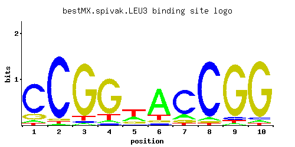

LEU3
YLR451W
Zinc-finger transcription factor that regulates genes involved in branched chain amino acid biosynthesis and ammonia assimilation; positively regulated by alpha-isopropylmalate, an intermediate in leucine biosynthesis
Best-performing DNA-binding model.

View and copy the recommended matrices ↘
A | 0.054 0.019 0.025 0.048 0.309 0.729 0.146 0.048 0.025 0.034 C | 0.750 0.919 0.026 0.040 0.065 0.057 0.722 0.894 0.053 0.036 G | 0.150 0.035 0.880 0.793 0.152 0.072 0.080 0.031 0.881 0.898 T | 0.045 0.027 0.068 0.118 0.474 0.143 0.053 0.026 0.042 0.032
A | 5 1 2 4 30 72 14 4 2 3 C | 75 91 2 4 6 5 72 89 5 3 G | 15 3 88 79 15 7 8 3 88 89 T | 4 2 6 11 47 14 5 2 4 3
A | -1.78 -2.82 -2.55 -1.90 -0.03 0.82 -0.78 -1.90 -2.55 -2.24 C | 1.43 1.63 -1.93 -1.50 -1.02 -1.15 1.39 1.60 -1.22 -1.61 G | -0.18 -1.64 1.59 1.48 -0.17 -0.92 -0.81 -1.76 1.59 1.61 T | -1.96 -2.47 -1.55 -1.00 0.39 -0.81 -1.80 -2.51 -2.03 -2.30
Alternative candidate matrices 9
Historical matrix candidates from the original ScerTF database. Expand a source to inspect its original logo, scores, and matrix values.
LEU3Badis et. al.P = 2.98e-13View matrix ↘
LEU3_AFoat et. al.P = 7.93e-16View matrix ↘
LEU3_BFoat et. al.P = 1View matrix ↘
LEU3Harbison et. al.P = 3.64e-21View matrix ↘
LEU3Macisaac et. alP = 6.48e-18View matrix ↘
LEU3Morozov et. al.P = 1.66e-19View matrix ↘
LEU3Pachkov et alP = 1.48e-18View matrix ↘
LEU3Zhu et. al.P = 0.06748View matrix ↘
LEU3Zhao and StormoP = 9.71e-05View matrix ↘
Gene-level annotations and interactions.
Genes bound in ChIP-chip experiments 70 genes
YAL028W, YAL029C, YAR009C, YBR048W, YBR068C, YCR018C-A, YCR019W, YCR024C-A, YDR042C, YDR064W, YDR131C, YDR210W-D, YDR278C, YEL050C, YEL055C, YER007C-A, YER071C, YER072W, YER073W, YER137C, YER189W, YER190W, YGL001C, YGL009C, YGL135W, YGL136C, YGR190C, YGR191W, YGR221C, YGR255C, YGR256W, YHL034C, YHR207C, YHR208W, YIL014W, YIL015C-A, YJL139C, YJL148W, YJL191W, YJL192C, YJR016C, YJR018W, YJR100C, YKL118W, YKL120W, YKL172W, YLR105C, YLR354C, YLR355C, YLR356W, YLR367W, YLR368W, YML124C, YMR014W, YMR108W, YMR193W, YMR194W, YNL102W, YNL103W, YNL104C, YNL337W, YNR050C, YOL121C, YOR108W, YOR226C, YOR227W, YOR236W, YOR271C, YOR369C, YPL198W
Genes affected by TF deletion 63 genes
YJR016C, YJR048W, YOR225W, YGL009C, YNL241C, YOR226C, YHR145C, YPL016W, YBR068C, YLR307W, YOL104C, YGL071W, YHR208W, YIL050W, YOR161C, YPL084W, YBR097W, YBR129C, YOR316C, YCR050C, YMR173W, YER152C, YIL121W, YLR099C, YHR063C, YLR348C, YPR026W, YMR291W, YFL021W, YLR349W, YMR108W, YMR110C, YJR003C, YOL058W, YGR164W, YLR451W, YKL120W, YMR173W-A, YOR084W, YKL030W, YBR083W, YKL029C, YLR355C, YER091C, YHR018C, YAL062W, YGR146C, YGR117C, YHR136C, YDR061W, YFL008W, YGL190C, YGL255W, YKR036C, YNL104C, YDR245W, YHR135C, YOR375C, YBL051C, YMR276W, YOL101C, YER073W, YNL324W
Genes supported by both experiments 10 genes
YBR068C, YER073W, YGL009C, YHR208W, YJR016C, YKL120W, YLR355C, YMR108W, YNL104C, YOR226C
Predicted TF–TF partners 1 genes
GCN4